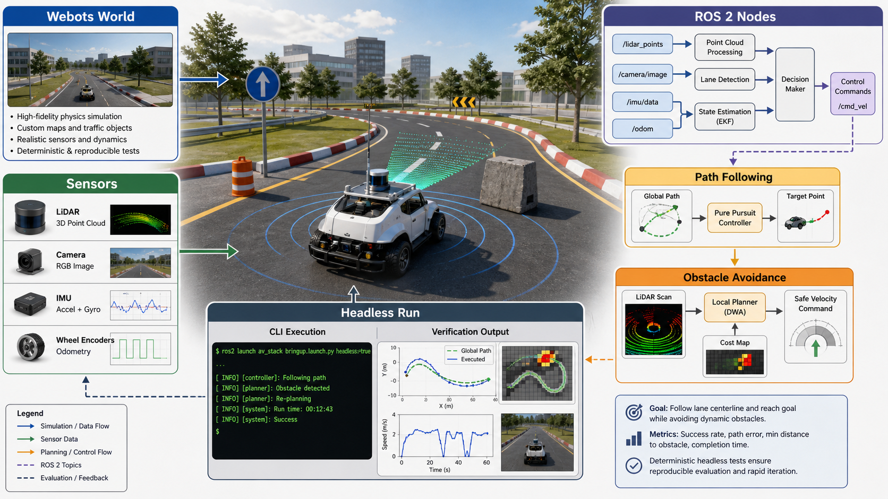

10 / Robotics
CSE434 Robotics: Webots + ROS 2 自动车仿真工程化整理
这个公开项目展示的是工程组织能力：world、sensor、path following、obstacle avoidance、headless run 和部署文档如何组成一套可验证仿真。

它作为早期工程证据，说明我重视可运行状态、部署边界和 blocker 透明度。
Webots、ROS 2、pure pursuit、LiDAR obstacle logic。
证明：系统复现；边界：partial deployment。
项目概览
CSE434 Autonomous Vehicle 是一个公开 GitHub 工程项目，主题是 Webots + ROS 2 Jazzy 的自动车仿真。它包含 50m x 50m road circuit、obstacles、camera / LiDAR / GPS / IMU、Ackermann steering vehicle、path_follower.py、obstacle_avoider.py、Webots controller 和 Docker/Singularity 部署文档。
这不是 Lawless 那种 agent 产品，但它展示了我对工程可运行性的要求：不是只写一个控制函数，而是把仿真环境、传感器输入、控制节点、避障逻辑和 headless 运行组织成能被别人复现的项目。
1. 问题： robotics demo 最容易卡在“我本机能跑”
机器人/自动驾驶课程项目常见问题是代码和环境混在一起：world 文件、controller、ROS 节点、依赖、启动顺序和可视化环境相互耦合。只要换一台机器，demo 就可能无法复现。
因此这个项目把系统拆成可解释组件：Webots world 提供环境和传感器，ROS 2 节点负责路径跟随和避障，文档说明如何在本地或 headless 环境运行。即使最终 HPCC Webots container 存在构建阻塞，代码和部署思路仍然清楚。
2. Method
路径跟随采用 pure pursuit 类方法，目标是让车辆沿 road circuit 平稳行驶；避障采用 LiDAR sector reactive logic，根据扇区距离做转向或减速判断。这个设计不追求复杂规划算法，而是保证课程项目范围内系统可调、可解释、可观察。
传感器侧包括 camera、LiDAR、GPS 和 IMU；控制侧通过 Ackermann steering vehicle 和 Webots controller 接入。headless 运行文档面向 HPCC，但公开 deployment 状态显示 Webots container 仍有构建阻塞，因此已验证范围停留在代码、节点和部署方案层面。
3. 实现与验证
公开 repo 的 DEPLOYMENT_STATUS 显示 ROS 2 workspace build 成功，节点可运行；Webots container 在 HPCC 上仍有构建阻塞。因此公开材料中写“代码和 headless 方案完成”，不写“HPCC 完整 demo 已验证”。
这个边界很重要：项目可以展示我对仿真系统的拆解能力，也可以作为 public artifact 入口；未验证的 HPCC Webots deployment 不应被当作已完成成果。
4. 和 agent 工作的连接
robotics 项目和 agent workspace 看似不同，但它们共享一种工程习惯：把系统拆成 state、action、feedback 和 verification。Webots 里是传感器、控制、仿真和日志；Lawless 里是 case context、tool call、artifact、review 和 eval ledger。两者都要求系统能跑、能看、能解释失败。
和普通课程 robotics demo 的区别
普通课程 demo 往往只展示一个能跑的视频，但不说明 world、controller、ROS 节点、传感器和部署边界。CSE434 项目的不同点是把 Webots world、ROS 2 nodes、pure pursuit、LiDAR reactive logic 和 headless deployment notes 组织成公开 artifact。
它也诚实保留阻塞：ROS 2 workspace 和节点可运行，但 HPCC Webots container 仍有构建阻塞。未验证的 deployment 不被当作成功结果；项目只保留已经能被公开材料支持的工程状态。
5. 技术补充： state, control, deployment
Webots + ROS 2 项目里，state 来自 GPS、IMU、LiDAR 和 camera；control 通过 path follower 和 obstacle avoider 输出 Ackermann steering；deployment 需要让 world、controller、ROS workspace 和依赖版本对齐。任何一层不稳定，demo 都会失败。
pure pursuit 的价值在于简单、可解释、容易调试。它根据目标路径点和车辆状态给出转向；LiDAR sector logic 则给 obstacle avoidance 一个低成本 safety layer。对于课程项目，这种可解释性比追求复杂模型更重要。
headless 运行是工程化尝试：把 GUI 依赖降到最低，让仿真可以在远程或 HPCC 环境里启动。公开证据显示 Webots container 仍有构建阻塞，因此已完成部分是 headless 方案、代码组织和节点结构，而不是全流程成功部署。
6. 它证明了什么
这个项目展示的不是 state-of-the-art 自动驾驶，而是系统集成和验证意识：写清问题定义、组织代码入口、记录 deployment 状态、公开 GitHub，让别人知道哪些部分能跑、哪些部分仍有阻塞。
真实的工程 maturity 往往体现在知道什么已经验证、什么还没验证。CSE434 的价值是把可运行组件、部署思路和阻塞点放在同一个可检查 artifact 里。
7. 验证补充： 如何诚实呈现 demo 状态
CSE434 的公开 repo 支持这些结论：ROS 2 workspace 能 build，节点结构清楚，Webots world 和 controller 已组织，headless 部署方案有文档；同时 HPCC Webots container 仍有阻塞。这个状态说明项目有真实 deployment 尝试，也保留了可继续推进的边界。
后续升级方向很明确：补充真实视频截图或 GIF，并把启动命令、环境版本和最终运行路径整理成 reproducibility note。能说明问题边界的项目，比一句“完成自动驾驶仿真”更可信。
8. 工程收获
CSE434 的工程 takeaway 是把仿真拆成可替换模块：world 可以换，controller 可以换，path follower 可以调，obstacle avoider 可以单独测试，部署文档可以独立维护。这个模块化习惯在 Lawless 里变成 skill、tool、artifact、verifier 和 reviewer 的分层。
9. 补充说明： simulation 的失败也要被记录
机器人仿真项目常常把失败藏起来，只展示最后视频。但真实工程里，失败记录同样重要：是 ROS workspace 没 build，还是 Webots controller 没连接，还是 container 缺图形依赖，还是传感器 topic 没发布？每一种失败都指向不同修复路径。
CSE434 的 deployment notes 记录了当前状态：代码和 headless 方案完成是一种状态；HPCC Webots container 阻塞也是一种状态。这种边界比一句“实现自动驾驶仿真”更可信。
它也和 agent runtime 有相似之处。agent 运行失败时，也要知道是 tool auth、source fetch、citation parse、artifact builder、review gate 还是 UI rendering 出错。无论 robotics 还是 legal AI，工程成熟度都体现在能不能定位系统失败。
10. 补充说明： public artifact and reproducibility
CSE434 的公开仓库价值在于可检查。读者可以看到 README、problem definition、ROS 节点、Webots world 和 deployment note，而不是只能相信简历一句话。即使项目不是最核心，也能证明我愿意把工程材料整理成别人能读的形态。
这种习惯在 agent 产品里很重要。Lawless 的很多成果不能全部公开，但可以通过截图、测试、build notes、report page 和局部 repo 证据展示工程质量。公开 artifact 不一定覆盖全部代码，它的作用是提供一个可信入口。
11. 结论
CSE434 承担的是工程可信度补充：它证明我能把仿真环境、控制节点、传感器和部署文档组织成公开 artifact。它不是主线项目，但清楚展示了现有证据、运行边界和未完成阻塞。这种诚实的工程表达，反而比夸大 demo 更有力量。
参考材料
- GitHub: https://github.com/ZiAngGu1/CSE434-honors-option
- CSE434-honors-option README and DEPLOYMENT_STATUS.